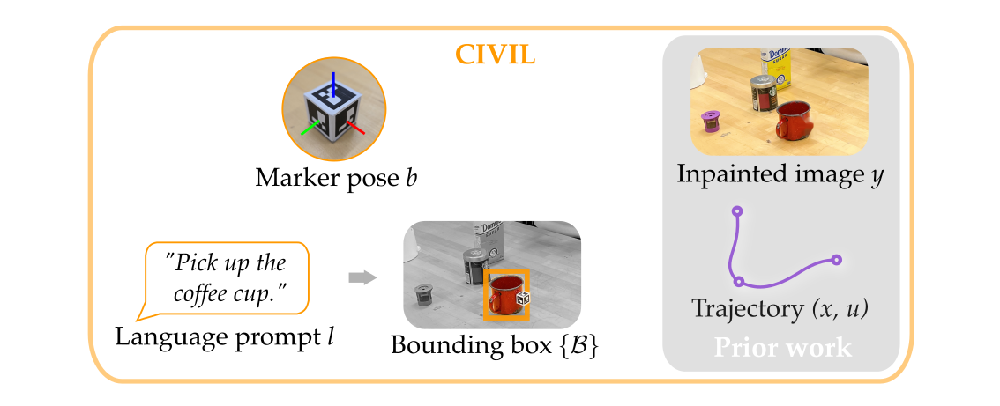
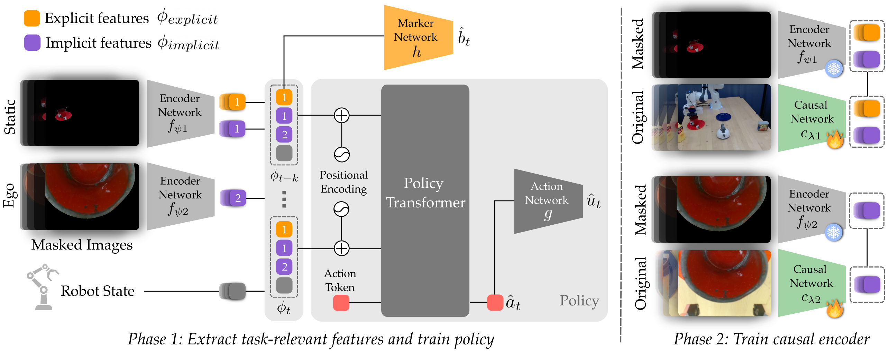

Method

In Step 1, we enable humans to mark task-relevant positions (e.g., the coffee maker) with ArUco markers. In Step 2, as the human demonstrates the task they can provide natural language prompts that mention task-relevant objects (e.g., the cup). The resulting dataset for offline learning includes states x, images y, actions u, marker data b, and language prompts l. After providing data, the human removes the markers from the environment, and the robot processes its images to inpaint those markers so that they are not required at test time.
Algorithm and Implementation

The training of our model is split into two phases. (Left) In the first phase we supervise a subset of the features using a marker network h to explicitly encode the relevant poses b marked by the human expert. At the same time, we train the remaining features to implicitly capture other task-relevant information by masking the input images to highlight the relevant objects conveyed by the human through natural language instructions l. (Right) In the second phase we freeze the encoder network and policy network, and train a causal network c to map the original images to the same features as those learned by the robot from the masked images in the first phase.
Real-World Experiments
We evaluate our approach in a real-world setting using a robot arm to perform 4 manipulation task on a kitchen table: Cooking, Pressing, Picking, and Pulling. The goal of this experiments is to test if CIVIL remains effective even when trained with limited and noisy data. For the experiment expert humans demonstrate the tasks using a joystick while placing markers on task-relevant objects, and providing language prompts. We compare against two visual imitation learning baselines in seen and unseen testing scenarios, "seen" denotes environment configurations where the relevant objects are in regions included in the training data, while "unseen" describes configurations with relevant objects being in completely new regions.

Cooking
The goal for this task is for the robot arm to stir or scoop the contents of a pan at a fixed location with a spatula. The robot "stirs" if there are vegetable on the pan, and "scoops" if there is meat instead. CIVIL performs the correct task successfully when distractor position changes or switched (tomato can and syrup bottle), while baselines sometimes get confused when background object changes. Scroll left to see baseline performance.
Pressing
In this task the robot presses a red button locate on the table along with 5 cups as distractors. During training the yellow cup is always located behind the button. CIVIL goes to the red button with distractors randomly placed, while the baselines either get confused by the distractors or go to the wrong position when distractors are moved around. Scroll left to see baseline performance.
Picking
The task is for the robot to pick up the red cup, the robot will also see other objects such as a plate, a sugar box, a spam can, a pasta box, and sugar packets randomly placed on the table. During training the robot will always observe a white bowl placed in front of the cup. CIVIL approaches and picks up the cup in unseen distractor configurations, while we observe baselines lose robustness and precision in their actions. Scroll left to see baseline performance.
Pulling
The task is for the robot to pull a white bowl to the center of the table. Some distractors include another bowl, some vegetables, and a cheez-it box. During training an eggplant is placed inside the bowl, and a carrot is placed in front of the bowl. CIVIL is able to pull the bowl in seen and unseen configurations, while the baselines sometimes get confused by the placement of distractors. We also observe that Task-VIOLA sometimes lose bounding box on the white bowl when the gripper approaches to it. Scroll left to see baseline performance.